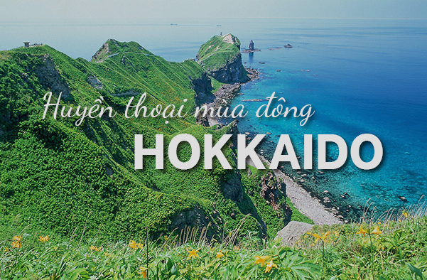
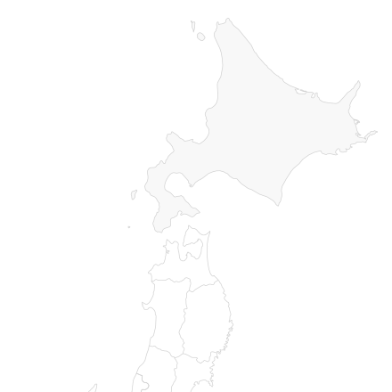

Hokkaido
Hokkaido (Hokkaidō) is the second largest, northernmost and least developed of Japan's four main islands. Its weather is harsh in winter with lots of snowfall, below zero temperatures and frozen seas, while in summer it does not get as hot and humid as in the other parts of the country.
With its unspoiled nature, Hokkaido attracts many outdoor lovers, including skiers and snowboarders in the colder seasons and hikers, cyclists and campers from June to September.